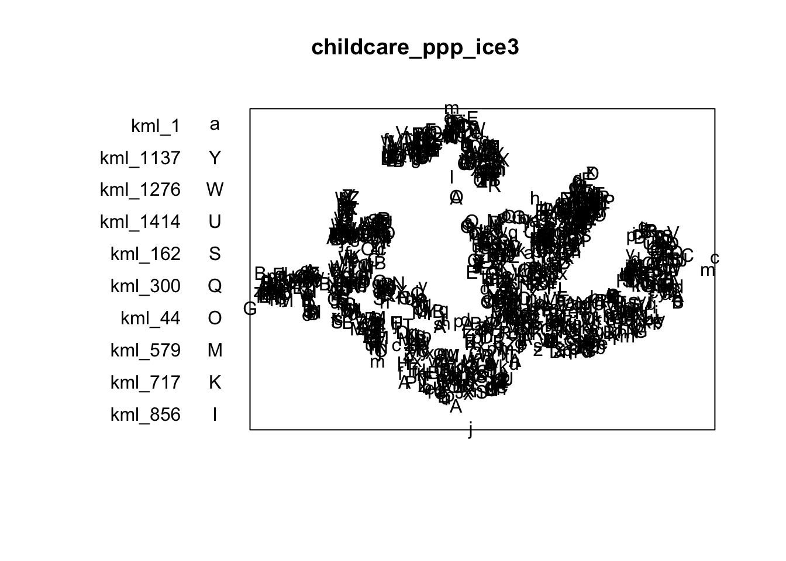
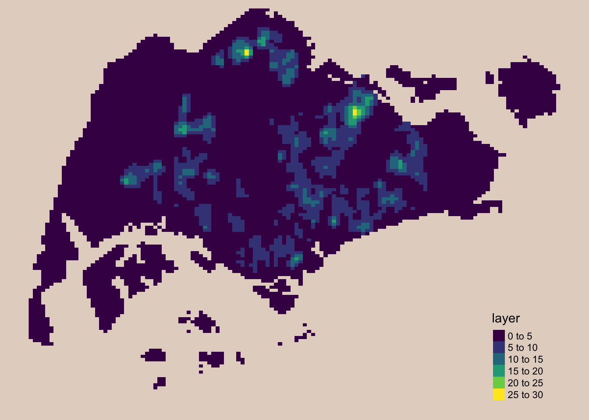

pacman::p_load(sf, raster, spatstat, tmap, tidyverse)ICE 3: SPPA: spatstat methods
Issue 1: Installing maptools
Install from Posit Public Package Manager snapshots, because maptools is retired and binary is removed from CRAN
install.packages('maptools', repos = 'https://packagemanager.posit.co/cran/2023-10-13')When retrieving archived versions, take note of dependencies.
After installing, ensure
eval=FALSEthe installing code to avoid maptools from being downloaded and installed repetitively every time theqmdis rendered.
Issue 2: Create coastal outline
In sf package, there are 2 functions that allow the combining of multiple sf into one sf:
st_combine()andst_union()- Combines several feature geometries into one, without unioning or resolving internal boundaries
# derive coastal outline of tibble data.frame
sg_sf <- mpsz_sf %>% st_union()# sg_sf <- mpsz_sf %>% st_union()
# plot(sg_sf)
# doesnt work; error message:
# ! object 'mpsz_sf' not found
# Backtrace:
# 1. mpsz_sf %>% st_union()
# 2. sf::st_union(.)Note: straight convert to sf for consistency
Intro to spatstat package
for 2D SPPA, including multi-type or marked points
sub-packages:
# spatstat.data - datasets
# spatstat.utils - util functions
# spatstat.univar - est. & manipulate prob. distr. of 1-d random vars
# spatstat.sparse - manipulate sparse arrays & perform linear algebra
# spatstat.geom - define spatial objs & perform geometrical ops
# spatstat.random - rng of spatial pattern & model sims
# spatstat.explore - EDA & nonparametric analysis of spatial data.
# spatstat.model - model-fitting, model diagnostics, and formal inference.
# spatstat.linnet - defines spatial data on a linear network, and performs geometrical operations and statistical analysis on such data.Creating ppp object from sf data.frame
Instead of using the 2-step approaches discussed in Hands-on Exercise 3 to create the ppp objects, use as.ppp() from spatstat.geom to dervice a ppp object layer from sf tibble data.frame
childcare_sf3414 <- st_read('data/child-care-services-geojson.geojson') %>% st_transform(crs = 3414)Reading layer `child-care-services-geojson' from data source
`/Users/williamtjw/is415-gaa-williamtjw/resources/ICEs/ex3/data/child-care-services-geojson.geojson'
using driver `GeoJSON'
Simple feature collection with 1545 features and 2 fields
Geometry type: POINT
Dimension: XYZ
Bounding box: xmin: 103.6824 ymin: 1.248403 xmax: 103.9897 ymax: 1.462134
z_range: zmin: 0 zmax: 0
Geodetic CRS: WGS 84childcare_ppp_ice3 <- as.ppp(childcare_sf3414)Warning in as.ppp.sf(childcare_sf3414): only first attribute column is used for
marksplot(childcare_ppp_ice3)Warning in default.charmap(ntypes, chars): Too many types to display every type
as a different characterWarning: Only 10 out of 1545 symbols are shown in the symbol map
View childcare_ppp_ice3
summary(childcare_ppp_ice3)Marked planar point pattern: 1545 points
Average intensity 1.91145e-06 points per square unit
Coordinates are given to 11 decimal places
marks are of type 'character'
Summary:
Length Class Mode
1545 character character
Window: rectangle = [11203.01, 45404.24] x [25667.6, 49300.88] units
(34200 x 23630 units)
Window area = 808287000 square unitsCreating owin object from sf data.frame
Create an owin object class from polygon sf tibble data.frame
sg_sf <- st_read(dsn = 'data/', layer = 'CostalOutline')Reading layer `CostalOutline' from data source
`/Users/williamtjw/is415-gaa-williamtjw/resources/ICEs/ex3/data'
using driver `ESRI Shapefile'
Simple feature collection with 60 features and 4 fields
Geometry type: POLYGON
Dimension: XY
Bounding box: xmin: 2663.926 ymin: 16357.98 xmax: 56047.79 ymax: 50244.03
Projected CRS: SVY21sg_owin <- as.owin(sg_sf)
plot(sg_owin)
summary(sg_owin)Window: polygonal boundary
50 separate polygons (1 hole)
vertices area relative.area
polygon 1 (hole) 30 -7081.18 -9.76e-06
polygon 2 55 82537.90 1.14e-04
polygon 3 90 415092.00 5.72e-04
polygon 4 49 16698.60 2.30e-05
polygon 5 38 24249.20 3.34e-05
polygon 6 976 23344700.00 3.22e-02
polygon 7 721 1927950.00 2.66e-03
polygon 8 1992 9992170.00 1.38e-02
polygon 9 330 1118960.00 1.54e-03
polygon 10 175 925904.00 1.28e-03
polygon 11 115 928394.00 1.28e-03
polygon 12 24 6352.39 8.76e-06
polygon 13 190 202489.00 2.79e-04
polygon 14 37 10170.50 1.40e-05
polygon 15 25 16622.70 2.29e-05
polygon 16 10 2145.07 2.96e-06
polygon 17 66 16184.10 2.23e-05
polygon 18 5195 636837000.00 8.78e-01
polygon 19 76 312332.00 4.31e-04
polygon 20 627 31891300.00 4.40e-02
polygon 21 20 32842.00 4.53e-05
polygon 22 42 55831.70 7.70e-05
polygon 23 67 1313540.00 1.81e-03
polygon 24 734 4690930.00 6.47e-03
polygon 25 16 3194.60 4.40e-06
polygon 26 15 4872.96 6.72e-06
polygon 27 15 4464.20 6.15e-06
polygon 28 14 5466.74 7.54e-06
polygon 29 37 5261.94 7.25e-06
polygon 30 111 662927.00 9.14e-04
polygon 31 69 56313.40 7.76e-05
polygon 32 143 145139.00 2.00e-04
polygon 33 397 2488210.00 3.43e-03
polygon 34 90 115991.00 1.60e-04
polygon 35 98 62682.90 8.64e-05
polygon 36 165 338736.00 4.67e-04
polygon 37 130 94046.50 1.30e-04
polygon 38 93 430642.00 5.94e-04
polygon 39 16 2010.46 2.77e-06
polygon 40 415 3253840.00 4.49e-03
polygon 41 30 10838.20 1.49e-05
polygon 42 53 34400.30 4.74e-05
polygon 43 26 8347.58 1.15e-05
polygon 44 74 58223.40 8.03e-05
polygon 45 327 2169210.00 2.99e-03
polygon 46 177 467446.00 6.44e-04
polygon 47 46 699702.00 9.65e-04
polygon 48 6 16841.00 2.32e-05
polygon 49 13 70087.30 9.66e-05
polygon 50 4 9459.63 1.30e-05
enclosing rectangle: [2663.93, 56047.79] x [16357.98, 50244.03] units
(53380 x 33890 units)
Window area = 725376000 square units
Fraction of frame area: 0.401Combining point events object and owin object
# childcare_sg_ppp <- left_join()
childcare_sg_ppp_ice3 <- ppp(
x = childcare_ppp_ice3$x,
y = childcare_ppp_ice3$y,
window = sg_owin
)Warning: data contain duplicated pointsplot(childcare_sg_ppp_ice3)Alternatively,
childcare_sg_ppp_ice3_1 <- childcare_ppp_ice3[sg_owin]plot(childcare_sg_ppp_ice3_1)Warning in default.charmap(ntypes, chars): Too many types to display every type
as a different characterWarning: Only 10 out of 1545 symbols are shown in the symbol mapKernel Density Estimation of Spatial Point Event
The code chunk below re-scale the unit of measurement from metre to kilometre before performing KDE.
childcare_sg_ppp_km_ice3 <- rescale(childcare_sg_ppp_ice3,1000,'km')
# Computes an adaptive estimate of the intensity function of a point pattern.
kde_childcare_sg_adaptive <- adaptive.density(
childcare_sg_ppp_km_ice3,
method = 'kernel'
)
plot(kde_childcare_sg_adaptive)KDE - converting output into grid object
gridded_kde_childcare_sg_adaptive <- maptools::as.SpatialGridDataFrame.im(
kde_childcare_sg_adaptive)Please note that 'maptools' will be retired during October 2023,
plan transition at your earliest convenience (see
https://r-spatial.org/r/2023/05/15/evolution4.html and earlier blogs
for guidance);some functionality will be moved to 'sp'.
Checking rgeos availability: FALSEplot(gridded_kde_childcare_sg_adaptive)spplot(gridded_kde_childcare_sg_adaptive)Note: plot() v. spplot()
plot(): Best for basic, quick visualizations using base graphics.
spplot(): Ideal for advanced spatial plotting with thematic elements using lattice graphics.
gridded_kde_childcare_sg_adaptive_1 <- as(
kde_childcare_sg_adaptive,
'SpatialGridDataFrame')
# same output map as maptools method
# spplot(gridded_kde_childcare_sg_adaptive_1) Plotting an output raster using tmap
kde_childcareSG_bw <- density(
childcare_sg_ppp_km_ice3,
sigma=bw.diggle,
edge=TRUE,
kernel='gaussian'
)
kde_childcareSG_bw_raster <- raster(kde_childcareSG_bw)
tm_shape(kde_childcareSG_bw_raster) +
tm_raster(palette = "viridis") +
tm_layout(legend.position = c("right", "bottom"),
frame = FALSE,
bg.color = "#E4D5C9")Warning: Currect projection of shape kde_childcareSG_bw_raster unknown. Long
lat (epsg 4326) coordinates assumed.
Extract and create an ppp object showing child care services and within Punggol Planning Area
mpsz_sf <- st_read(dsn = 'data/', layer = 'MP14_SUBZONE_WEB_PL')Reading layer `MP14_SUBZONE_WEB_PL' from data source
`/Users/williamtjw/is415-gaa-williamtjw/resources/ICEs/ex3/data'
using driver `ESRI Shapefile'
Simple feature collection with 323 features and 15 fields
Geometry type: MULTIPOLYGON
Dimension: XY
Bounding box: xmin: 2667.538 ymin: 15748.72 xmax: 56396.44 ymax: 50256.33
Projected CRS: SVY21mpsz_sf3414 <- st_set_crs(mpsz_sf, 3414)Warning: st_crs<- : replacing crs does not reproject data; use st_transform for
thatpunggol_owin <- mpsz_sf3414 %>%
filter(PLN_AREA_N=='PUNGGOL') %>%
as.owin()
plot(punggol_owin)punggol_childcare_ppp <- childcare_ppp_ice3[punggol_owin]
plot(punggol_childcare_ppp)Warning in default.charmap(ntypes, chars): Too many types to display every type
as a different characterWarning: Only 10 out of 61 symbols are shown in the symbol map